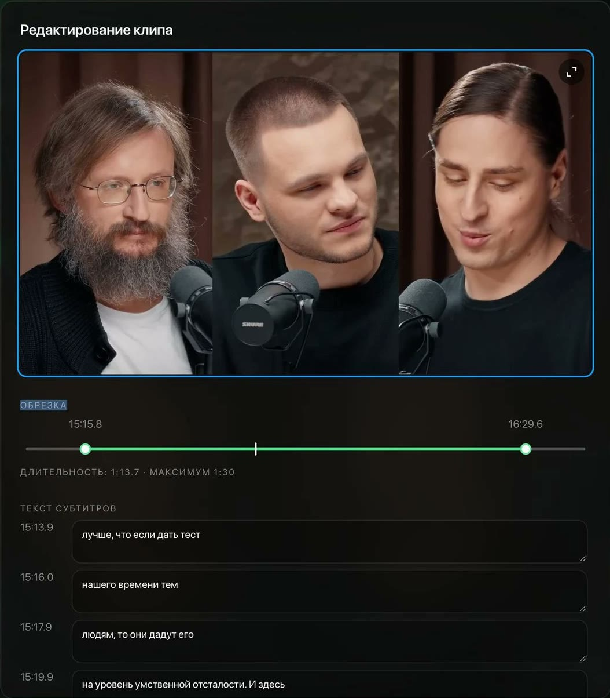

01
Находит лучшие моменты
Каждый момент оценивается по четырём критериям — и в клип попадает самое сильное.
Дайте длинную запись — Клипмейт найдёт в ней лучшие моменты и нарежет вертикальные клипы с субтитрами.
Выберите видео или перетащите своё, настройте длину клипов и переход — и отправьте запись в шредер.
Каждый клип будет примерно такой длины
Ролики ниже — настоящие клипы, сделанные в Клипмейте.
Каждый момент оценивается по четырём критериям — и в клип попадает самое сильное.
Клипы длятся от 30 до 90 секунд. Точное число зависит от содержания видео.
Шрифт и подача субтитров, кадр — по лицу, размытый фон или чёрные поля, переходы и своя музыка.
Сдвиньте начало и конец, поправьте субтитры и название. Скачайте клип или все сразу архивом ZIP.
306 шрифтов, 105 эффектов перехода и 16 готовых шаблонов уже на платформе
Двигаете начало и конец, меняете кадр, правите субтитры и заголовок.

Вы даёте длинную видеозапись, Клипмейт находит в ней лучшие моменты и нарезает вертикальные клипы с субтитрами. Моменты оцениваются по четырём критериям: хук, эмоция, польза и законченность мысли.
Вставьте ссылку на видео с YouTube или на запись трансляции с Twitch, либо загрузите файл: MP4, MOV, MKV, WebM, AVI или MPEG.
Каждый клип длится от 30 до 90 секунд. В среднем получается 10-20 клипов с часа видеозаписи, но все индивидуально и зависит от содержания видео.
Зависит от длины записи. На экране записи написано, через сколько клипы будут готовы.
Да. Нажмите «Редактировать» у клипа: сдвиньте начало и конец (клип не короче 5 секунд) и поправьте текст субтитров. Название клипа меняется прямо на карточке.
Шрифт и подачу субтитров, кадр (по лицу, размытый фон или чёрные поля), переходы и музыку. Музыку можно загрузить свою: MP3, WAV или M4A до 50 МБ.
Скачайте клип кнопкой «Скачать» или все сразу архивом ZIP. Файлы клипов хранятся 3 месяца, потом удаляются.